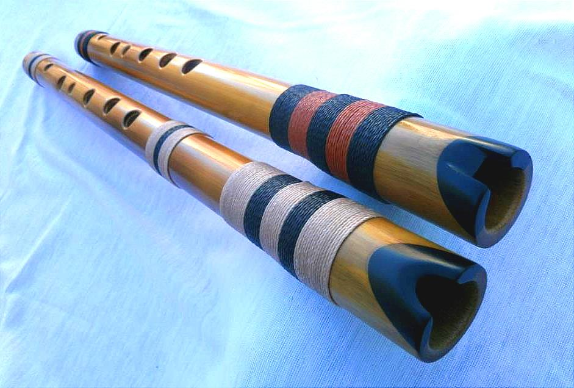

La quena (del quechua qina pronunciado [qɛna]) es un instrumento de viento de bisel, parecido a una flauta.
Es uno de los instrumentos más antiguos del continente americano, ampliamente utilizado en la región andina del
Perú, Bolivia, Ecuador, norte de Chile y Argentina, la quena se difundió por la zona de la Cordillera de los
Andes durante el Imperio Incaico.
Su origen se puede rastrear en las culturas andinas preincaicas. Un grupo de quenas que se ubican entre las más
antiguas de América fueron halladas en los vestigios arqueológicos en la ciudadela de la civilización Caral que
tiene una antigüedad de 5.000 años, pero la quena más antigua fue hallada en la zona de Chilca-Perú,
relativamente cerca a Caral aunque con una antigüedad de mil años más antigua que esta, es decir una antigüedad
de 6.000 años, lo que se constituye probablemente en la quena más antigua de América. El equipo del arqueólogo
argentino Carlos Aschero encontró en 1973 ocho quenas, siete de ellas de caña de bambú y una de hueso, en el
yacimiento Inca Cueva (Jujuy), datado en unos 4.000 años antes del presente.
El primer registro documental de la palabra quena apareció en el vocabulario de la lengua aimará del misionero
Ludovico Bertonio en 1612.
En la actualidad es uno de los instrumentos más populares de los conjuntos folclóricos de música andina,
extendiéndose su uso también a la música de fusión, world music, música nueva era, etc.